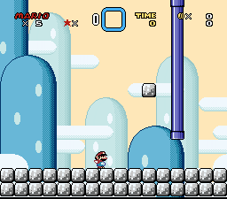

Screen Scrolling Pipes
By GreenHammerBro.
This block pack contains custom block pipes that when the player enters them, instead of
screen-fading to the next level, the player will move through the pipes (along with the screen following the player) to the other end.
Table of Contents
-
Introduction
- Features not seen before
-
How to insert
-
- Screen Scrolling *warp* pipes (warp/drag mode)
- Pipe cap cannons
-
F.A.Q
-
Notes
-
Credits
^Introduction
The primary purpose of this release was because FuSoYa's SMB3 screen scrolling pipes are incompatible with the custom block
insertion tool; Gopher Popcorn Stew (GPS). Although it was updated to work with GPS on 05/30/2019, glitches remain due to being a mere port to the new block inserter tool:
- The player will be teleported to the last pipe exited if the player hits the bottom of any horizontal
pipe caps (including small ones), translucent block, or on/off block (on the latest version). If
the player haven't enter the pipes at all, will be teleported to the top-left corner of the level.
- If the player's pipe movement travel ends with going left, then vertical (going up or down), and then exit,
the player's X position will be slightly to the left from the center of the pipe.
- If the player is carrying a sprite, and drops the sprite as he exits an upwards facing pipe cap, the sprite
will be clipped into the cap part of the pipe:

- Prior to the release of this package, old screen scrolling pipes (FuSoYa isn't the only one, MikeyK made his)
require an exit tile (air or water) in front of their caps, thus making the placements of blocks around it more
inconvenient (requires an extra space of tiles)). FuSoYa, is even worse, given that each direction uses their own exit tile rather than shared, you couldn't place the pipes like this without glitches:

You wouldn't want these in your hack:
- If you try to enter the top of a small vertical pipe cap and slip off the right edge, Mario can “escape”
the exit tile placed on top of it, causing mario to be in his pipe state without entering the pipe:
This is due to the exit tile's hitbox not reaching rightwards far enough.
- The range that is allowed to enter a small vertical pipe cap is not what you expect. Mario's relative X position
(MarioRelativeXPos = MarioXPos - PipeCapXPos) must be values ranging from -1 to +6
(both numbers inclusive) to be able to enter, therefore, it would look like this:

Here is how inconsistent to enter them:

- Mario will interact with any blocks placed directly below the horizontal pipes (so a muncher can kill the player
inside the pipe). Note that in this package, for small horizontal pipes, the player will interact with blocks placed
above the pipe, see here to fix that.
- Leftwards facing pipe caps (including small pipes) have the block being passable (“suck” mario in) and setting
the player's entering pipe state are being separate and don't always do both together for 1 frame, leading to minor oddities like this:

By tapping right for 1 frame, it tries to suck Mario in, but doesn't set Mario's pipe state until further embedded into the pipe cap, therefore
Mario gets ejected out as if he is clipping into a solid block.
- When exiting a small pipe at the top, Mario gets pushed to the left by 1 unit (pixel), this is due to mario switching back to “out-of-pipe”
state before he fully emerges from the pipe, so he slightly clips into the block.
^Features not seen before:
- This package do not use exit tiles placed in front of pipe caps (air tiles or water tiles placed in front of pipe caps),
instead it relies on a RAM frame timer to determine if the player is fully out of the pipes; Therefore you can put any tiles
(obviously you shouldn't put solid tiles there) without worry.
- Turn pipe corners for small pipes. FuSoYa did feature small pipes that can only be entered by
small Mario, but have forgotten the turn pipe corners, thus straight pipes with gaps for turns
are needed on FuSoYa's SSPs.
- As of version 3.2.2, turn pipe corners now have a smoother change of direction instead of
snapping the player's coordinates when approaching them. It wait tills Mario's position is at or
past the point he needs to change direction (it will center the player correctly).
- Customizable speed. Because why not? (be careful not to set to speeds that are too fast though).
- As of version 4.0.0, a brand new feature was added: Screen Scrolling *warp* pipes. Inspired by
WhiteYoshiEgg's Carryable Pipe,
this gimmick lets you have non-physically-connected pipes in your level without any required blocks in between,
meaning you don't have to worry about the path being in the way of designing levels in between those two points.
^Insertion
What you need:
- Uberasm Tool (v2.0+ required)
- Gopher Popcorn Stew (GPS)
- Lunar Magic's map16 page 4 (and/or 5, if you're only going to use the “main parts”) not used, unless you can move it to another page
- Lunar Magic v3.0+. The provided levels need to have a version of LM that supports custom level dimensions.
- No More Sprite Tile Limits patch. Certain sprites on screen randomly disappear when in pipes. Ignore this if you have SA-1 installed.
-
Screen scrolling patches that allows faster vertical scrolling with the player if you are planning to have any form of
fast vertical speed. If the player moves down more than 4 pixels per frame long enough, the player may catch the death barrier and triggers a death sequence. Going upwards, the screen caps the player to 3 pixels per
frame once the player reaches the top barrier (at PlayerYPosScrn = #$FF80, or -128 (set at $00F597)). Patches including but not limited to:
Recommended
-
Player X speed patch. If you're using the horizontal cannon pipes, the player can inadvertenly slow down when
holding in the direction he's fired.
-
Yoshi Pipe Animation Fix, by Kevin. Fixes a visual bug where if RAM $7E1419 is set
to any nonzero value, yoshi will act as if he's entering a pipe reguardless if the player is on yoshi or not.
-
P-balloon fix. One of the major bugs is that the player's facing direction is locked during a p-balloon (last set prior to grabbing the balloon), and
that the horizontal pipes (both vanilla exit-enabled and my screen-scrolling) only allow entry when facing towards them.
Tools provided
- GPS block list relocator tool I made this tool to deal with moving large number of blocks. By default, almost the entire page of 4 and 5 are used, and you
can either move your custom blocks or my pipes to a different page (if latter and you still want to test the provided level, you'll need to use LM's “Remap Direct Map16”, see Menubar → Edit → Remap Direct Map16).
Instructions to apply to your game.
- Lunar Magic (Everything related to this is located in LM_Stuff folder.)
- Simply copy the graphic files and paste them in their respective folder. The file naming should
be obvious.
- Open the level file demonstration.mwl (level $0105). (MenuBar > File > Open Level from
file...). Note that demonstration_WrapTest.mwl (level $0106) is for testing a level wrap mechanic for UberasmTool_Stuff/level/SSP_WarpDragLevelWrap.asm.
- Open your map16 editor, and import tilemap.map16 (Question block with a red left
arrow on it;
 ). After the blocks are imported, hit save.[Map 16 location note]
). After the blocks are imported, hit save.[Map 16 location note]
- ASM
- Define note
- Make necessary changes to SSPDef/Defines.asm (including making sure the freeram it uses not conflict with other unrelated ASM resources). And make sure you read the comments. Of course, if you already inserted the ASM
codes and wish to edit and re-insert, make sure you have the copies of it up to date with correct information and reinsert to update. You must update every time you make changes.
- Uberasm Tool (inside UberasmTool_Stuff folder)
- Copy the folder (the folder itself) SSPDef and paste it in the same directory as uberasm tool.exe
is in, not in any of the subfolder of uberasm tool.
- Stuff within UberasmTool_Stuff should be obvious with convenient file names. Thanks to UAT2.0, you can have multiple ASM files for the same level/gamemode/oveworld (separated via commas).
-
On Uberasm tool's list.txt, under gamemode, just put this:
14 GM14_ScreenScrollingPipes.asm
106 SSP_WarpDragLevelWrap.asm : %00000011
- Title screen note
- If you are planning to have this also apply on the title screen, create another entry for list.txt under gamemode:
7 GM14_ScreenScrollingPipes.asm
- Please note that Fixes.asm modifies some of the player's vanilla physics for the entire game to check the freeram used by the screen scrolling pipes. Therefore the RAMs are reserved even when
GM14_ScreenScrollingPipes.asm's code is not running.
- Now insert the code by running uberasm tool.
- GPS (in GPS_Stuff folder)
- Copy the folder of SSP_Tiles, and paste that in GPS's blocks folder. After doing that, then
paste another copy of SSPDef in the main directory of GPS (where the exe program is at, not in the subfolder/subdirectory).
Also paste the asm file(s) in BlockRoutines in GPS's routines folder.
- Copy the text from one of the two files in blocks_list folder and paste it in GPS's list file. Now run GPS to insert the blocks.*
Both the tile lists and the map16 blocks provided must match.
- Patches (in Patches folder)
- Before you install Fixes.asm, I want to warn you that patch also includes a hijack at $00EA18 (this is normally the code that pushes the player leftwards
if he is embedded inside a block, such as Big Mario inside a 1-tile tall space, his head clips inside the ceiling block) to prevent this small bug: If small mario tries to enter
the downwards-facing small pipe cap by hitting the bottom corners, he'll enter 1 pixel to the left than where he supposed to be positioned:

Unfortunately, the “WJNB fix patch” also hijacks that spot (a range from $00EA16 to $00EA21). It is okay to patch Fixes.asm AFTER patching
the WJNB because Fixes.asm will auto-detect that and will not modify WJNB's hijack in any way. But if you installed Fixes.asm first, and wanted to install the WJNB fix patch afterwards, open Defines.asm, and set !Setting_SSP_Hijack_00EA18
to 0, reinstall Fixes.asm, and then install the WJNB fix patch. And whatever you do, DON'T install the WJNB patch with Fixes.asm being installed with !Setting_SSP_Hijack_00EA18 set to 1, or a potential freespace may have been leaked.
- Not much to say, simply install Fixes.asm via asar. This patch fixes various bugs relating with the pipes and sprites to not interact with the player during a pipe travel. Make sure you do not move the file, else you have to edit the
incsrc "<path to the defines file>" to get it to work.
- Pixi (in Pixi folder). This mainly deals with making custom sprites be compatible with the SSPs. Mainly the fact that custom sprites may interact with the player in ways they shouldn't, and they should be rendered invisible
with the player (by skipping the graphics code/routine) when dragged into the pipe.
- The first thing you want to do is similar to Uberasm tool and GPS-- Paste a copy of SSPDef in the same directory as pixi.exe is located.
- Paste all ASM files in this package's Pixi/routines in pixi's routines folder.
- Level usage
Click here for how to use in levels. Note that some info are out of date due to the rearragement of blocks since the 4.0.0 update. I kept this info,
along with the old map16 blocks (list and a .map16 file), for in case you wanted to port your blocks to a newer version without tedious remapping.
See here for up-to-date information.
*If you need to move the pipes or your other blocks to a different map16 page, use this tool to move to a different page number.
Extra features
^Screen Scrolling *warp* pipes (warp/drag mode)
I also have given a new feature that let you have pipes “warp” (or teleport) the player to another location in the same level (this is not as in, refresh the level! I mean to be at another location without using exit-enabled
pixelulate to black level-refresh effects). This is somewhat similar to the carryable pipe in the sprites section that the pipe pairs appear not to be
physically connected to another, but they acts as portals that “teleports” (The player actually gets dragged to his destination ignoring all object and sprite interactions, since instant teleporting result in graphical glitches)
the player to the other end.
This works by making use of the aiming routine so that the player will seamlessly move to where he should be dragged to without the noticeable 8-direction movement as the screen scrolls to follow the player. During this effect,
he will ignore all object interactions and the way to determine mario should switch back to states $01-$08 (his pipe state in !Freeram_SSP_PipeDir) is using uberasm to generate a destination point hitbox
which will revert the state and reenable block interaction when collided.
This will allow you to have anything in between those two ends of the travel without interfering the player's pipe traveling (but be careful with some custom sprites though), enabling you
not to be required to have any pipe-related blocks in the area in between.
Psst, Nintendo called them “warp pipes” instead of just “pipes” because of that very reason of not always being physically connected to the other end.
To get this running (when using the warp-drag mode block), see this tutorial here
I also included a per-level ASM code for uberasm tool, SSP_WarpDragLevelWrap.asm, that adds a trigger when Mario hits the edge of the level (screen if disabled scrolling) while pipe-traveling, to send him to the opposite edge of the level with optionally inverting where on the edge
the player should emerge from.
^Cap cannons
Along with the variations of cap cannons added (including the ability to have each cap individually allow or forbid things like carrying and riding yoshi), I also featured pipe caps
that when exit out of, flings the player a short distance with momentium. This is especially useful for kaizo hacks involving platform tricks. Note that I recommend installing the Player X speed
fix patch because of a quirk with SMW's horizontal speed handling that if you are going faster than max, and you hold left or right in the direction he's going, Mario will decelerate rather than to keep his speed.
See the list of blocks in the block placement section
^FAQ
- How do I set the freeram and settings?
- Look in SSPDef/Defines.asm. If you make changes to it, you MUST update the other copies of it in GPS and uberasm
tool so they use updated information.
- When Mario enters a pipe, Mario passes through them as if they turned into air tiles!
- You've forgot to insert the uberasm tool code GM14_ScreenScrollingPipes.asm as gamemode 14, which is needed as blocks have certain limitations.
- Horizontal pipe caps can't entered even if I used ones that are labeled “enterable”!
- You forget to install a patch included in this package, go into the folders: /Patches/Fixes.asm. This fixes a ton of bugs and
other issues needed so that the pipes are ensure no major issues will happen.
- I've found a bug! Will you fix it?
- Yes, but only if I'm active on smw central. However, in the case that I'm inactive, you are free to re-upload my works, just make sure you
give credit.
- How do I modify the speeds, and other customizations?
- Open SSPDef/Defines.asm, there should be things like what RAM you want to use, if you wanted the pipes to not freeze time, etc.
Just make sure you read the descriptions, espically when you are changing the pipe cap speeds (how mario exit the pipes rely on a timer of when
the player will be out of “pipe mode”). Make sure you read this because fast speeds can cause the player to phase through turn
corners and exit caps without interacting them, causing the player to continue in his pipe state and direction when he shouldn't.
^Notes
-
If you carry any custom sprites through these pipes, they will not go behind the layer;
appearing superimpose of the pipe as mario is being behind the layer. Unless you can
make it change the yxppccct using this code to be used in a custom sprite's code:
SSPPriority:
%SSPDetectSpriteCarriedInPipe() ;>Carry clear = Not carried inside the pipe, Set: Carried into the pipe.
BCC .InFront
.Behind
LDA !15F6,x
AND.b #%11001111
BRA .Skip
.Infront
LDA !15F6,x
ORA.b #%00xx0001 ;>Replace the Xs with a binary number that is the sprite's original priority:
;00 = Appear behind everything except Layer 3 tiles with priority setting 0
;01 = Appear behind everything except Layer 3 tiles (unless they have priority setting
; 1 and the "force above everything" bit is set)
;10 = Appear in front of Layer 3 tiles (unless they have priority setting 1 and the
; "force above everything" bit is set) and Layer 1 and 2 tiles with priority setting 0;
; appear behind Layer 1 and 2 tiles with priority setting 0 (this is SMW's normal setting
; for most sprites)
;11 = Appear in front of everything, except Layer 3 tiles with priority setting 1 if the
; "force above everything" bit is set
.Skip
STA !15F6,x
Same also applies if the carried sprite is a stunned sprite that can unstun themselves during a pipe travel, with !Setting_SSP_FreezeTime == 0, then you would set the timer to some value every frame
(such as the value of !Setting_SSP_Minimal_StuntimerSprites) to prevent it.
-
Also, this SSP package is intended to make both the player and the carried sprite invisible when he fully enters
the pipe (when his entering animation timer hits 0) so that you can have non-physically-connected pipes without the
carried sprite revealing the player's position. However, this only works with SMW's sprites handled by Fixes.asm.
To have this be applied to carryable custom sprites, I provided a small subroutine in Pixi/routines/SSPCheckShouldCarriedSpriteTurnInvisible.asm, for use in PIXI's routines
folder, and any carryable custom sprite used in your hack, on their graphics handler, do this (this is a template/example, most sprites uses different label names):
turns into:
CodeStart:
%SSPCheckShouldCarriedSpriteTurnInvisible()
BCS SkipGFX
JSR GRAPHICS
SkipGFX:
-
When the player enters the pipe, he ignores most sprites and any carried sprites with him will also ignore them too,
combined with the above info that the player (and carried sprite) turns invisible, the fact that you actually don't need connectors besides caps, turn corners, and (maybe) dragmode block,
to keep the player in pipe state (because it is handled by uberasm tool, most non-changing-state-blocks are pass_if_in_pipe.asm which becomes passible if in pipe and does nothing
beyond that), it also means you can have SSPs setups like this:

Just remember that:
- The player will keep going in whatever last sets his direction state.
-
Unlike warp/drag mode, blocks in his path must not be interactable as they can interfere with the pipe traveling movement (best case is to make blocks act as #$0025 when !Freeram_SSP_PipeDir's low nybble is set):
incsrc "../SSPDef/Defines.asm" ;>This to obtain a define that points to a RAM address use for the checking
db $42 ; or db $37
JMP MarioBelow : JMP MarioAbove : JMP MarioSide
JMP SpriteV : JMP SpriteH : JMP MarioCape : JMP MarioFireball
JMP TopCorner : JMP BodyInside : JMP HeadInside
; JMP WallFeet : JMP WallBody ; when using db $37
MarioBelow:
MarioAbove:
MarioSide:
TopCorner:
BodyInside:
HeadInside:
CheckPipeTraveling:
LDA !Freeram_SSP_PipeDir ;>Load pipe direction state
AND.b #%00001111 ;>Mask out bits 4~7 so we only have bits 0~3, which are the actual pipe state.
BEQ .NotInPipeTraveling ;>If zero (not in a pipe), then Mario isn't pipe traveling
.InPipeTraveling
;Code here that does something while pipe traveling.
LDY #$00 ;\Example: Make this block passable
LDA #$30 ;|
STA $1693|!addr ;/
RTL ;>And only do just nothing for a pipe-traveling player.
.NotInPipeTraveling
;Code here that interacts with the player while outside the pipe. Example: Insta-kill the player
JSL $00F606|!bank
;WallFeet: ; when using db $37
;WallBody:
SpriteV:
SpriteH:
MarioCape:
MarioFireball:
RTL
print "A simple test block that behaves differently depending on if the player is pipe traveling or not."
-
Same goes for custom sprites and other third-party ASM resources. Use incsrc "<path_to_SSP_defines>" (file paths must be wrapped in quotes if it has spaces) to obtain !Freeram_SSP_PipeDir, use it for checking its low nybble, and ignore when nonzero.
-
If you have !Setting_SSP_HideDuringPipeStemTravel set to 0 in the defines, the player remains visible even when he is in the gap he's passing through. The exception of that is entering through screen scrolling doors or using warp/drag mode. Otherwise you can use
set_visibility_off.asm to hide the player just before the gap and set_visibility_on.asm to force the player to be visible after traversing the gap.
- If you enter a pipe, while yoshi exist, yoshi will also turn invisible (with some 8x8 pieces still visible), I couldn't fix that.
- The routine file is also SA-1 hybrid, no need to worry about yoshi issues about it. However, you must use RAM address in banks $40/$41 should you need to use 3-byte addressing ($4XXXXX)
-
If Mario gets on a p-balloon, Mario will keep facing the same direction prior
grabbing it even when moving the opposite direction (so if he grabs it facing left,
he'll keep facing left, evidence is that the screen pans in the same direction
regardless of which left or right direction Mario is going), until the balloon wears
off. If you try entering horizontal pipe caps that way, Mario won't enter the pipes if
he's facing away from the cap (so he doesn't enter backwards), so if you are using this,
you should download the
“P-balloon timer fix”
(linked in the recommended patches), that will fix the error and always allow Mario to enter. Do note that
being under the effect of the balloon counts as “carrying something”.
-
Don't make it possible for the player to to be inside these pipes while in layer
3 tides, because since the tides still runs while freeze flag is still set ($7E:009D,
except when taking damage, its the player animation trigger ($7E:0071)), it will push
mario while in the pipe and causes glitches like coming out of the pipe out of nowhere
or even “escape” the pipe and leaving the player's still in “pipe physics mode”,
softlocking the game. EDIT: This is fixed. You can now use the pipes in the tide freely.
-
I had to store #$0B into $7E0071 so that when setting $7E:009D to freeze time works
properly; most sprites don't freeze (excluding ones that doesn't check $9D (the freeze flag),
like birds/puff of smoke on yoshi's house). Address $00CDE8 is responsible for this problem,
this runs every frame when $7E0071 = #$00. I'll keep the store #$0B to $7E0071 in case if
uberasm could not disable the controls properly just in case. It's also needed to prevent
player controls during pipe movement.
-
For some reasons, SSP_Tiles $40D-$411, $413, $16, $417, $41C, $41E, $41F, $423, $425-$428,
$42B-$42F, $436, $437, $43B-$43E, $440, $44B-$44F, $45E, $45F, $46F, $47E, $47F, and
$48E uses the wrong discriptions of another block when viewed on LM, even though the
discriptions in the asm blocks are correct, it might be a glitch with LM viewing or
GPS's discription, I can't really fix that, so if this bothers you, simply disable it
in the definition file, that way, it will only show up its name correctly without any
errors. Hopefully this gets fixed, if it was, please PM me or update the file (by
editing the files (like the if statement containing the print commands) in this package
and removing this notice). In the future, they may be fixed due to the bugs happening in the tool itself.
EDIT: It's fixed. This is due to using a backslash character or other reserved characters.
-
While most sprites don't interact with the player in any way when the player is traveling through pipes,
be aware that some sprites still do interact with the player:
-
All smw's solid sprites (mainly platforms) that sets the player character's position when standing on them
are hijacked to prevent misaligned entering horizontal pipes. But not some custom sprites (depending how
$9D was handled if it should still interact with the player, when !Setting_SSP_FreezeTime not enabled by the SSP settings).
To fix that, simply look for a code that writes (STA) to an address $94-$97 (these are the player's XY position
in the level, $94-$95 = X position, $96-$97 = Y position), and add this to skip over setting the player's
coordinates, and also writing $1471:
incsrc "../SSPDef/Defines.asm"
;^This at the top, and must be up to date (as in match) with all of them used by blocks, patch and uberasm tool.
; You may have to fiddle around with the "../" (parent directory) in case for future tools. Then make sure you
; copy and paste the folder containing the definitions where the sprite tool's exe is at.
LDA !Freeram_SSP_PipeDir
AND.b #%00001111 ;>Check bits 0-3 to see if the player is currently in a pipe
BNE .DontSetPos ;>If nonzero, mario is in a pipe.
;*code that uses, lets say sprite position ($D8, $E4, $14D4, and $14E0), displaces the
;number from it, and writes to $94-$97, and writing to $1471*
.DontSetPos ;>Must skip ALL position-related code
-
Also, in case other codes that sets the player's X and Y speed or positions ($7A-$7B, $7D $13DA, $13DC
$94-$95, and $96-$97), make sure you don't write them during pipe movement. Otherwise it will override
and misalign Mario from the pipe. An example of this can happen is patches like wind and gravity generators
may cause this to happen.
- While inside the pipe:
- The player is behind the layer ($7E13F9 is #$02). When his entering timer hits 0 (!Freeram_SSP_PipeTmr), the player (and carried sprite) turns invisible
-
RAM address $7E0071 is set to #$0B when freezing is enabled (have !Setting_SSP_FreezeTime set to 1)
(due to the fact that if you set $9D to a non-zero value without setting $7E0071 to #$0B on an uberasm code, the freezing
gets nullified and some stuff will ignore the freeze effect thanks to address $00CDE8 clearing the freeze flag every frame).
Thus, if a sprite doesn't check those or coded in a way that interacts with the player reguardless of his state (including
doing things during $9D or $71 being set), it can mess up his pipe travel and causes glitches. Things like wind generator, or wind generated
by a sprite can push mario out of a pipe path and cause a softlock as he misses an exit or a change-direction-corner. To avoid this
issue, a simple code mentioned earlier will solve this.
-
When traveling downwards and hits a corner that changes the player's direction to horizontal (left or right), the blocks below the turn corner
may be interacted. Be careful not to put instant kill, teleport, or any other such blocks there, unless you add a check to not interfere
with the player traveling:
LDA !Freeram_SSP_PipeDir ;\If inside a pipe, return.
AND.b #%00001111 ;|
BNE InsidePipe ;/>Don't do anything as the player travel through pipes
-
To add to the note above, be careful with setting the travel speeds to make the player travel very fast, he may phase through
the interaction fields of the turn corners and pipe caps (he'll pass through without triggering them). This is because SMW (and pretty much all video games, even in 3D) handles
movement as movement broken up into “individual step of positions” each frame (movement isn't continuous). Each position
of movement handles collision, but not in between these points, thus the faster the player moves, the more wider-apart these interactable positions are, and the more
likely he'll phase and overshoot through them should the next position the player moves ends up on the other side of the interaction field:

The player is essentially teleporting from point to point, here is what it looks like (augmented):
Mario actually moves up to 8 pixels per frame, and the blocks runs a position check (if the player is centered enough within a certain range to alter his pipe
state and snap him centered in a short distance) and “pseudo collision points”, therefore, the area range to trigger Mario to change direction or state
is not a full 16x16 pixels block.
-
Turn corners, and “prep-turns” utilize a “pseudo collision points” system to pick only one block at a given pixel coordinate to interact with when the player touches multiple. This is to prevent bugs when two different turn corners or other pipe parts, especially small ones, are touching each other, which
causes the player to be able to interact with both at the same time, causing a potential softlock. The points are located here:

It works like this:
BlockXPosition_In_Pixels = floor((XPosition + 8 + XOffset) / 16) * 16
BlockYPosition_In_Pixels = floor((YPosition + ToPlayerBottomTile + YOffset) / 16) * 16
- "In_Pixels" refer to the XY position in pixels, meaning each block along an axis is 16 units, rather than 1 unit.
- Floor(x / 16) * 16 rounds the number downwards to the nearest 16.
The bitwise equivalent is AND.w #%1111111111110000, clearing bits 0~3.
- XPosition and YPosition are the player's coordinate, RAM $94~$95 and $96~$97.
- XOffset and YOffset is a custom offset from the center of the player's bottom 16x16 tile (signed)
- ToPlayerBottomTile is either:
-- #$0018 if not riding yoshi
-- #$0028 if riding yoshi
-
If you're not using custom sprites, RAM address $7FAB10 ($400040 SA-1) aren't initialized, thus
can cause issues like yoshi keeping his facing direction from when you enter after exiting a
horizontal pipe. This can be fixed by opening SSPDef/Defines.asm, and setting !Setting_SSP_UsingCustomSprites to 0. This is due to the fact that this ASM package assumes
you've installed spritetool/pixi.
-
When traveling through horizontal small pipes, Mario will interact with the “bottom” offset of any blocks placed above the horizontal
pipe. It is possible to prevent that by positing Mario lower, but he will interact with the “above” offset of blocks below the pipe.
Because of how small Mario's object collision points are exactly 16 pixels (full block, 15 pixels in between exclusively) tall, there is no
Y position that interacts neither, as Mario is too tall to avoid triggering any blocks placed above and below the horizontal small pipe:

If Mario is 1 pixel up (default Y position, Player_Y_Position = Block_Y_Position - 1) from the block he is directly inside of. |

If Mario's Y position is exactly the same Y position as the block. |
Small Mario's Collision points:
 |
| Just to let you know, I've enabled debug mode (the define !Setting_SSP_PipeDebug) to make Mario visible when traveling through pipes. |
However, this can be mitigated by editing small Mario's collision points location via interaction editor,
by moving either one of small Mario's collision points (top and bottom) closer to Mario's middle by at least 1 pixel. If you haven't edit any of the vertical centering
caused by horizontal small pipe caps, small turn corners (and the special turn corner), you can simply just move the head interaction down by 1 pixel. I wouldn't recommend
moving the foot part of the collision points upwards and have the player's Y position moved downward (+1 from default Y position) else the player will be slightly be lower
into the ground.
-
If Mario stands on a key sprite (sprite number $80), and enters a horizontal pipe cap the same time he picks the key up, he will carry the key as normal (albeit
his pose is acting like he isn't carrying anything), but upon exiting the pipe, Mario may (depends on the timing of picking up the key and entering) forcibly drop the key
(even if the player holds the dash button) due to the carrying sprites through pipe (!Freeram_SSP_CarrySpr) flag not being set prior entering.
It may be possible that this happens in a sequence within a frame:
-
The game first handles the player entering the pipe (sets his pipe status; !Freeram_SSP_PipeDir) with the pickup flags (RAM address
$7E1470 and $7E148F) being zero (thinks that the player isn't carrying anything)
-
Then later, the game handles the key being picked up, it registers that the player is picking up the key since the controller being read (checks if you are holding dash)
is before the controller gets disabled by the code handling pipe traveling from Uberasm tool.
EDIT: This bug is fixed as of version 3.2.8.
-
If you want blocks to be passable while the player is in his pipe state (such as a pipe that goes into a solid object for scenery), I provided you this code (see below)
Make sure all offsets must be passable during pipe travel.
incsrc "../SSPDef/Defines.asm"
;^I assume you would have this placed in the main directory of the blocks folder and not in any subfolders.
; If in subfolders, then prepend "../" to the path (example: ../../SSPDef/Defines.asm)
db $42 ; or db $37
JMP MarioBelow : JMP MarioAbove : JMP MarioSide
JMP SpriteV : JMP SpriteH : JMP MarioCape : JMP MarioFireball
JMP TopCorner : JMP BodyInside : JMP HeadInside
; JMP WallFeet : JMP WallBody ; when using db $37
MarioBelow: ;\ALL mario-related offsets MUST run a check if he is in a pipe state,
MarioAbove: ;|or bugs may occur (often Mario will get obstructed or pushed).
MarioSide: ;|
TopCorner: ;|The block can have any behavor set by Lunar Magic, however this block must
BodyInside: ;|be "ignored" during pipe travel to avoid potential issue.
HeadInside: ;/
;WallFeet:
;WallBody:
PipeCheck:
LDA !Freeram_SSP_PipeDir
AND.b #%00001111
BEQ .NotPipeMode
.PipeMode
LDY #$00 ;\Make block passable when in pipe
LDA #$25 ;|
STA $1693 ;/
.PipeDone
RTL ;>and don't do anything else.
.NotPipeMode
NotRelatedPipeCodeHere:
SpriteV:
SpriteH:
MarioCape:
MarioFireball: ;>If you disable freezing (locking $9D), having this run the pipe check causes pipes to also be passable to fireballs when Mario is in pipe.
RTL
print ""
-
Although, you may not use the SSPs on certain levels at your own discretion, and that you could only have the SSP uberasm tool code run at specific levels, be warned that the Fixes.asm
patch will apply to all levels, meaning that the freeram addresses the SSPs use are still used even if the uberasm tool code isn't running, which can cause glitches when being set to nonzero values.
-
Regular-szied screen Scrolling doors (ones that are 2-blocks tall) would have the upper tile also be a custom block due to how yoshi collision works.
-
Due to how RAM $78 (the RAM containing the hide player bits settings) works, bit 4 controls both hiding the player's cape tile and if all 8 bits are set (a value of #$FF),
yoshi will be invisible. This is a problem where if I want to hide the player and its cape tile but not hide yoshi that isn't ridden, Yoshi will have to disappear. I tried hijacking $00E2C0
to add a riding yoshi check ($187A|!addr), but the SA-1 patch also hijacks at $00E2BD, causing conflicts at $00E2C0 where the two 4-byte ranges overlap:
$00E2BD ;\SA-1's "level_mode.asm" hijacks here.
$00E2BE ;|
$00E2BF ;|
$00E2C0 ;\I tried hijacking here ;/ >An overlap of the 2 ranges here at $00E2C0, causing a crash.
$00E2C1 ;|
$00E2C2 ;|
$00E2C3 ;/
$00E2C4
$00E2C5
$00E2C6
^Credits
- Me, HammerBrother (Formerly GreenHammerBro) for this ASM package.
- MarioE and Akaginite for the sprite aiming routine (Akaginite fixed the code to allow unlimited distance). This is used
under uberasm tool to drag the player during warp mode.
- Benjamin Hollis, for letting me compress my images (via PNGGauntlet) so I can fit this package into SMWC's block section's 1MIB (1048.58KB) size limit
- AmperSam, for reporting an oversight with yoshi disappearing when hiding the player.
-
MarioFanGamer for finding and ripping some of the door codes (RAM $8F during block processing is a reliable backup of RAM $72, and a simple code that checks
if the player's X position is within a certain range to allow him to enter doors) from SMW.
- Makers of mesen 2.0 (github link), for its powerful debugging features.